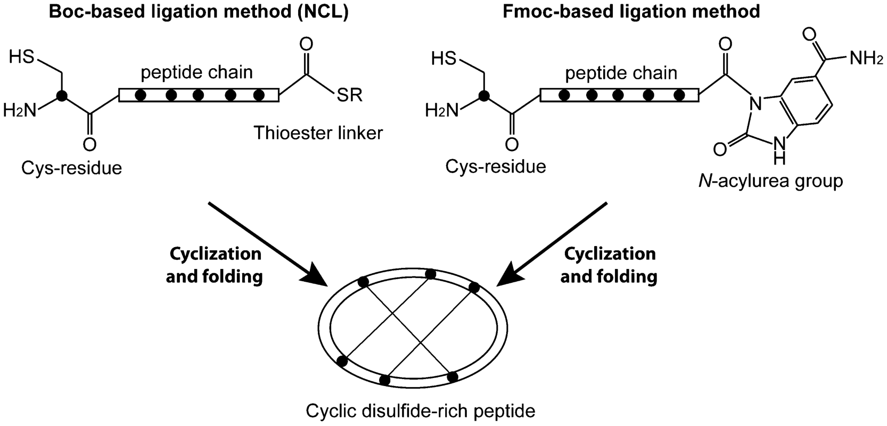
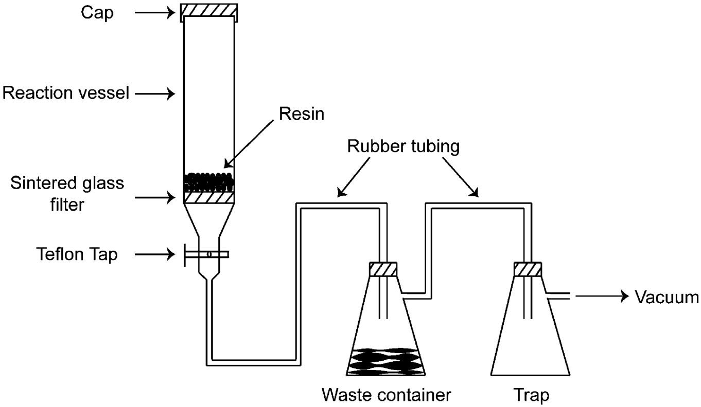
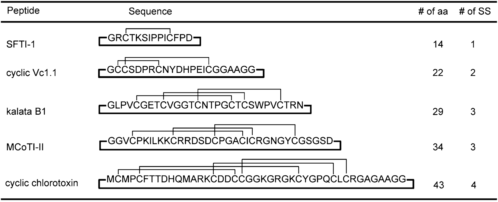
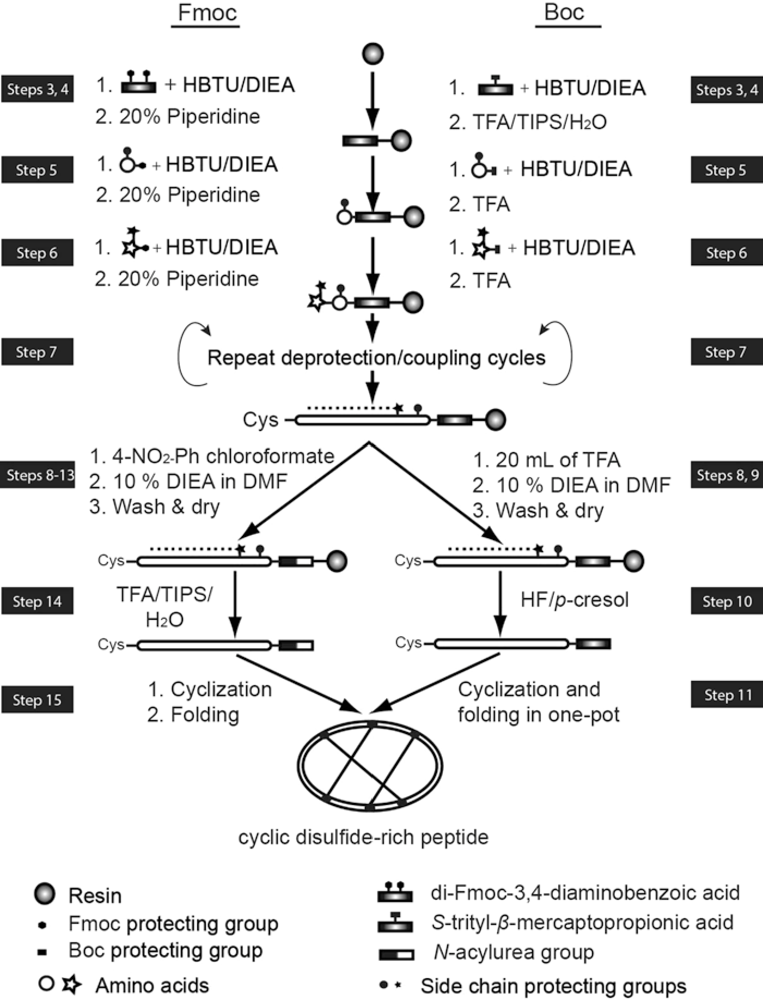

Chapter 6: Synthesis of Cyclic Disulfide-Rich Peptides
环状富含二硫键多肽的合成
原文作者：Muharrem Akcan & David J. Craik
出处：Methods in Molecular Biology, Peptide Synthesis and Applications (2013), Vol. 1047
在本章中，作者描述了实验室中两种 SPPS（Solid-Phase Peptide Synthesis，固相多肽合成）方法，用于制备环状富含二硫键的多肽（cyclic disulfide-rich peptides），包括：
来自植物的 cyclotides（环肽）
来自芋螺毒液的环状 conotoxins（芋螺毒素）
来自蝎毒的 chlorotoxin（氯毒素）
向日葵胰蛋白酶抑制剂肽 SFTI-1（sunflower trypsin inhibitor-1）
关键词：Cyclic peptides（环肽）、Cyclotides（环肽毒素）、Solid-phase peptide synthesis（固相多肽合成）
我们实验室主要研究被称为 cyclotides 的环状富含二硫键的多肽 [1]，这类多肽在药物设计和农业领域具有重要应用价值 [2–5]。它们天然存在于植物中，作为宿主防御肽（host defense peptides）发挥功能 [6]。
Cyclotides 具有两个结构特征：
头尾环化的骨架（head-to-tail cyclic backbone）
六个半胱氨酸（cysteine）残基形成三对二硫键，连接方式为 CysI–CysIV、CysII–CysV、CysIII–CysVI，称为环状胱氨酸结（cyclic cystine knot, CCK）模体 [1]
其环形拓扑结构使 cyclotides 在连续的半胱氨酸残基之间形成六个肽环（loops）。Cyclotides 分为两个主要亚族：
Möbius 亚族：原型 cyclotide kalata B1 属于此亚族，其序列的 loop 5 中含有一个 cis-proline 肽键
Bracelet 亚族：具有常规的全 trans 肽键骨架
此外，来自热带植物 Momordica cochinchinensis（木鳖子）的胰蛋白酶抑制肽 MCoTI-I 和 MCoTI-II 可视为第三个亚族，它们同样具有环状骨架和胱氨酸结模体 [8–10]，但与 Möbius 和 Bracelet 亚族无序列同源性。
CCK 模体赋予 cyclotides 异常的稳定性 [11]，使其成为生物工程应用的优秀骨架（scaffold），例如将肽段移植（grafting）到环状骨架上。已有研究报道：
将细胞外基质蛋白 laminin（层粘连蛋白）和 osteopontin（骨桥蛋白）的片段，以及血管内皮生长因子（vascular endothelial growth factor, VEGF）的序列，移植到 MCoTI-II 和另一种环肽骨架 SFTI-1 上 [12]
移植后的多肽比母体线性表位（linear epitopes）具有更高的稳定性，并在纳摩尔浓度下展现出体内促血管生成活性（in vivo angiogenic activity）
除了上述移植研究外，天然环肽的发现也激发了将常规（无环）富含二硫键的线性肽重新设计为骨架环化形式的想法，以增强其稳定性 [13–15]。代表性例子包括：
芋螺毒液肽 Vc1.1 的骨架环化：Vc1.1 是一种含两对二硫键的 16 氨基酸肽，靶向烟碱型乙酰胆碱受体（nicotinic acetylcholine receptors, nAChR）和 γ-氨基丁酸 B 受体（GABA_B receptors）。研究表明，骨架环化的 Vc1.1 比其线性形式更稳定，且在 GABA_B 受体上效力更强 [15]
蝎毒肽 chlorotoxin 的骨架环化：chlorotoxin 是一种含四对二硫键的 36 氨基酸肽 [17]，能选择性结合胶质瘤细胞（glioma cells）而不结合正常细胞 [18]。这一选择性靶向特性使 chlorotoxin 在区分肿瘤与正常组织的显像剂 [19, 20]、多功能纳米颗粒 [21] 和靶向基因治疗工具 [22, 23] 的开发中具有吸引力
固相多肽合成（SPPS）使我们能够合成上述各种环状多肽。在 SPPS 中，肽序列通过逐个偶联氨基酸的方式组装到固体聚合物树脂（resin）上 [24, 25]。
为防止肽链组装过程中单体氨基酸之间的相互偶联，使用两种氨基保护基（amine-protecting groups）之一：
tert-butoxycarbonyl（Boc）：酸不稳定保护基，需用三氟乙酸（trifluoroacetic acid, TFA）脱除
fluoren-9-ylmethoxycarbonyl（Fmoc）：碱不稳定保护基，用哌啶（piperidine）/二甲基甲酰胺（dimethylformamide, DMF）混合液脱除
我们实验室使用两种基于 SPPS 的策略合成环状富含二硫键的多肽：
策略一：Boc-SPPS + 分子内天然化学连接（NCL）
最常用的方法。利用 C 端硫酯基（thioester group）与 N 端半胱氨酸残基之间的分子内天然化学连接（intramolecular native chemical ligation, NCL）反应实现环化 [16, 26–29]。
硫酯连接基的偶联需要 Boc-SPPS 保护化学，因为硫酯在 Fmoc 化学所用的碱性条件下不稳定。硫酯连接基之后偶联的第一个氨基酸可以是任何残基，但 Gly、Cys、His 最有利；Leu、Thr、Val、Ile、Pro 最不利（这反映在与 N 端半胱氨酸的连接速率上）[26]。
策略二：Fmoc-SPPS + N-酰基脲连接
基于 Fmoc 的方法，分子内连接反应发生在 C 端 N-酰基脲基（N-acylurea group）与 N 端半胱氨酸残基之间 [30]。
在 Fmoc 方法中，必须使用 Boc-Cys(Trt) 作为 N 端氨基酸，而不是 Fmoc 保护的 Cys（见图 1）。

图 1 Boc 和 Fmoc 两种连接方法。在 Boc 方法中，分子内连接发生在 C 端硫酯与 N 端半胱氨酸残基之间；在 Fmoc 方法中，分子内连接发生在 C 端 N-酰基脲基与 N 端半胱氨酸残基之间。六个半胱氨酸残基以黑点表示，三对二硫键以线条表示。
Boc-SPPS 和 Fmoc-SPPS 合成的多肽可分别用氢氟酸（hydrogen fluoride, HF）和 TFA 从树脂上切割。
虽然 Boc-SPPS 切割后需要使用危险性的 HF，但由于其脱保护和偶联产率高于 Fmoc-SPPS，我们实验室更偏好使用 Boc-SPPS [31]。
本章的主要内容是描述稳健且常规使用的富含二硫键多肽合成策略，包括肽链组装和环状骨架形成。氧化折叠（oxidative folding）形成二硫键也是合成中的关键步骤，但通常需要针对每个多肽进行试验性优化（trial and error），因此仅提供指示性步骤。
对于 CCK 模体多肽，我们通常倾向于不使用正交保护（orthogonal protection），因为同时进行环化和折叠往往能以高产率获得具有天然二硫键连接方式的多肽。肽折叠质量通过核磁共振波谱（NMR spectroscopy）检验——正确折叠的富含二硫键多肽通常在酰胺区（7–10 ppm）给出分散良好的峰。
【要点总结】本章介绍两种合成环状富含二硫键多肽的 SPPS 策略：(1) Boc-SPPS 结合分子内 NCL（硫酯与 Cys 反应）；(2) Fmoc-SPPS 结合 N-酰基脲连接。Cyclotides 具有独特的 CCK 模体（六半胱氨酸形成三对二硫键的结状结构），赋予其异常稳定性，是药物工程的理想骨架。Boc 法产率更高但需使用 HF；Fmoc 法更安全但产率略低。氧化折叠通常无需正交保护，可通过 NMR 检验折叠正确性。
使用两种树脂：Boc-glycine-phenylacetamidomethyl (Boc-Gly-PAM) resin 和 Fmoc-Rink amide MBHA resin。
建议使用 100–200 目（mesh size）的树脂，因为在反应容器中更容易排液。
合成所需树脂量的计算公式（Equation 1）：
树脂质量 (g) = 合成规模 (mmol) / 取代值 (SV)
其中 SV（substitution value，取代值）为每克树脂的毫摩尔数（mmol/g），标注在树脂瓶上。
树脂置于如图 2 所示的反应容器中。容器配有烧结玻璃滤板（sintered glass filter），允许试剂排走而树脂保留在容器内。

图 2 固相多肽合成装置。反应容器配有烧结玻璃滤板，允许试剂排走而树脂保留在容器内。排出液收集在与容器通过耐酸碱橡胶管连接的废液容器中。第二个废液容器用作陷阱，防止任何液体泄漏到真空源中。
(1) 偶联试剂 HBTU
0.5 M HBTU（N-[(1H-苯并三唑-1-基)(二甲氨基)亚甲基]-N-甲基甲脒六氟磷酸盐 N-氧化物）溶液：将 94.82 g HBTU（MW = 379.3 g/mol）溶于 500 mL DMF 中。4°C 避光保存。
注意：HBTU 有害，需在通风良好的通风橱中称量。
(2) DIEA（N,N-二异丙基乙胺）
使用浓缩液，4°C 避光保存。
(3) 20% 哌啶溶液（piperidine solution）
将 100 mL 哌啶（piperidine）加入量筒，加 DMF 至 500 mL。4°C 避光保存。
(4) 切割试剂 (Cleavage agents)
液态氢氟酸（HF）、p-cresol（对甲酚）、TFA（三氟乙酸）和 TIS（三异丙基硅烷，triisopropylsilane）。
(5) 缓冲液 A 和 B (Buffer solutions)
溶液 A：在 1 L 蒸馏水中加入 500 μL TFA。
溶液 B：在 900 mL 乙腈（acetonitrile）中加入 100 mL 蒸馏水和 450 μL TFA。
将溶液 A 和 B 按 50:50 (v/v) 混合，制备 150 mL 混合液，室温保存。
(6) 定量茚三酮试剂 (Quantitative Kaiser ninhydrin test solutions)
76% (w/w) 苯酚（phenol）的乙醇溶液
0.2 mM KCN（氰化钾）的吡啶（pyridine）溶液：将 1.3 mg KCN 溶于 100 mL 吡啶
0.28 M 茚三酮（ninhydrin）的乙醇溶液：将 4.98 g 茚三酮溶于 100 mL 乙醇
60% 乙醇水溶液
以上溶液分别于 4°C 避光保存。
(7) 折叠/环化用缓冲液
0.1 M NH₄HCO₃（碳酸氢铵）(pH 8.2)：将 0.796 g NH₄HCO₃ 溶于 100 mL H₂O
0.1 M Tris–HCl、0.2 M NaCl、5 mM 还原型谷胱甘肽（reduced glutathione）/0.5 mM 氧化型谷胱甘肽（oxidized glutathione）(pH 7.8)
100 mM 乙酸铵（ammonium acetate, CH₃COONH₄）和 20 mM DTT（二硫苏糖醇，dithiothreitol）：将 0.770 g CH₃COONH₄ 和 0.308 g DTT 溶于 100 mL H₂O
【要点总结】材料部分涵盖了树脂选择（Boc-Gly-PAM 和 Fmoc-Rink amide MBHA）、反应容器装置、偶联试剂（HBTU/DIEA）、脱保护试剂（TFA/哌啶）、切割试剂（HF/TFA）、HPLC 缓冲液、茚三酮检测试剂以及多种折叠/环化缓冲液的详细配制方法。
图 3 概括了环状多肽合成的步骤，分别在 3.1 和 3.2 节中详细描述 Boc 和 Fmoc 方法的具体操作。
所有操作均在室温、通风良好的通风橱中进行，除非另有说明。试剂量基于 0.5 mmol 规模合成，纯化后通常可得到 >10 mg 最终产物。
这些操作已在我们的实验室中成功用于合成多种类别的富含二硫键的环状多肽：
SFTI-1（14 个氨基酸，1 对二硫键）
环化 Vc1.1（cyclic Vc1.1，22 个氨基酸，2 对二硫键）
kalata B1（29 个氨基酸，3 对二硫键）
MCoTI-II（34 个氨基酸，3 对二硫键）
环化 chlorotoxin（cyclic chlorotoxin，43 个氨基酸，4 对二硫键）

图 4 通过 Boc-SPPS 和 Fmoc-SPPS 合成的环状富含二硫键多肽的序列：SFTI-1、cVc1.1、kalata B1、MCoTI-II 和 chlorotoxin，标注了二硫键连接方式。右侧给出了各多肽的氨基酸数（aa）和二硫键数（SS）。
以下操作描述适用于手动合成（manual synthesis），但也同样适用于自动化 SPPS。

图 3 通过 Fmoc-SPPS 和 Boc-SPPS 策略合成环状富含二硫键多肽的流程图。两种方法均包含重复的脱保护（deprotection）和氨基酸偶联（coupling）步骤。Fmoc-SPPS 使用 C 端 di-Fmoc-3,4-二氨基苯甲酸（di-Fmoc-3,4-diaminobenzoic acid）作为连接基；Boc-SPPS 使用 S-三苯甲基-β-巯基丙酸（S-trityl-β-mercaptopropionic acid）作为连接基。Fmoc 和 Boc 基团的脱保护分别用哌啶和 TFA 实现。每步脱保护后用 HBTU/DIEA 活化的氨基酸偶联。偶联产率可通过定量茚三酮试验（quantitative ninhydrin test）计算。肽链组装完成后，分别用 TFA（Fmoc 法）或 HF（Boc 法）从树脂上切割。Boc-SPPS 法合成的多肽可在一步反应中同时完成环化和折叠；Fmoc-SPPS 法合成的多肽需先环化再折叠。
步骤 1：树脂溶胀 (Resin swelling)
将 0.83 g PAM-Gly 树脂（取代值 0.60 mmol/g）在 10 mL DMF 中溶胀，在第一次偶联前至少浸泡 1 小时（见 Note 2）。
步骤 2：Boc 脱保护
排去 DMF，加入 10 mL TFA 到反应容器中，去除树脂上的 Boc 保护基。等待 1 分钟，用 10 mL DMF 洗涤。重复此步骤一次，再用 200 mL DMF 充分洗涤树脂。
步骤 3：硫酯连接基的偶联 (Coupling of the thioester linker)
去除 Boc 基后，用 DMF 洗涤树脂。将 261 mg S-trityl-β-mercaptopropionic acid（S-三苯甲基-β-巯基丙酸）溶于 1.4 mL 0.5 M HBTU/DMF 溶液和 145 μL DIEA 中。将该溶液加入树脂，反应 30 分钟后用 20 mL DMF 洗涤。按相同步骤重复偶联一次硫酯连接基。用茚三酮试验检验偶联产率（见 Note 3）。
步骤 4：去除连接基上的三苯甲基 (Trityl removal)
用 10 mL TFA/TIS/H₂O (96:2:2) 混合液洗涤树脂（10 × 1 分钟），去除连接基上的三苯甲基（trityl）保护基（见 Note 4）。
步骤 5：第一个氨基酸的偶联
用 200 mL DMF 充分洗涤树脂。将第一个氨基酸溶于 4 mL 0.5 M HBTU 和 460 μL DIEA 中活化。将溶液加入反应容器，反应 1 小时。
对于图 4 中的五种多肽，建议的起始残基为：
SFTI-1：R3
cyclic Vc1.1：G1
kalata B1：G18
MCoTI-II：A20
cyclic chlorotoxin：M1
注意：肽链从 C 端向 N 端方向组装。例如 SFTI-1 的组装顺序为 R, G, D, P, F, C, I, P, P, I, S, K, T, C。
步骤 6：后续氨基酸的偶联与检测
用 20 mL DMF 洗涤树脂去除过量试剂和副产物。用 20 mL TFA（2 × 1 分钟）处理去除 Boc 保护基。用 200 mL DMF 充分洗涤去除 TFA。将第二个氨基酸溶于 4 mL 0.5 M HBTU 和 460 μL DIEA 中活化，加入反应容器反应 10 分钟。用茚三酮试验检验偶联产率。
若产率 > 99.6%，则偶联下一个氨基酸（进入步骤 7）。若产率 < 99.6%，用 20 mL DMF 洗涤树脂，对同一残基重复步骤 5 进行第二次偶联（见 Note 5）。
步骤 7：逐个偶联剩余氨基酸
按步骤 6 的方式逐一偶联肽序列中的所有氨基酸。每次偶联之间不要忘记去除 Boc 保护基。
步骤 8：肽基树脂的后处理
完成肽基树脂（peptidyl resin）组装后，用 20 mL TFA 处理树脂 1 分钟。排去后再用新鲜的 20 mL TFA 处理 5 分钟。排去并用 200 mL DMF 洗涤，然后用 10 mL 10% DIEA/DMF 处理 1 分钟。用 20 mL DMF 洗涤，再加 10 mL 10% DIEA/DMF 处理 1 分钟。用 100 mL DMF 充分洗涤。
步骤 9：树脂干燥
用 DCM（二氯甲烷，~100 mL）洗涤树脂，然后在氮气流下真空抽干。此时多肽已准备好进行 HF 切割。
步骤 10：HF 切割 (Peptide cleavage from resin)
使用 HF/对甲酚 [9.5:1.0 (v/v)] 混合液在 -4 至 0°C 下切割 1.5 小时，然后冻干（lyophilize）。
具体操作：将 1 mL p-cresol 加入 0.5 g 树脂中，将浆液冷冻。加入 10 mL HF，在 -4 至 0°C（盐水冰浴）下搅拌孵育 1.5 小时。蒸发去除 HF，将多肽沉淀于冰冷乙醚（ice cold ether）中。过滤后将滤饼重新悬浮于溶液 A/B (50:50, v/v) 中，过滤去除树脂。用旋转蒸发仪去除残留乙醚，然后冻干（见 Note 6）。
用反相高效液相色谱（RP-HPLC）纯化粗品线性肽。
⚠ HF 高度危险且具腐蚀性，只有经过认证的人员才能进行 HF 切割反应。
步骤 11：环化与折叠 (Cyclization and folding)
合成多肽的环化和折叠同时在 pH 7.5–8.5 的缓冲液中进行（见 Note 7）。各多肽的折叠缓冲液见表 1。
以 kalata B1 为例：将 50 mg 干肽溶于 100 mL 含 0.1 M NH₄HCO₃ (pH 8.2) 和 50% 异丙醇（isopropanol）的缓冲液中。室温搅拌反应混合物 24 小时。过滤反应混合物，稀释后用 RP-HPLC 纯化。
表 1 富含二硫键环肽的环化和折叠缓冲液
| 多肽 (Peptide) | 缓冲液 (Buffer solution) | 温度 (°C) | 时间 (h) |
|---|---|---|---|
| SFTI-1 | 0.1 M NH₄HCO₃ (pH 8.2) | 25 | 24 |
| Cyclic Vc1.1 | 0.1 M NH₄HCO₃ (pH 8.2) | 25 | 24 |
| Kalata B1 | 0.1 M NH₄HCO₃ (pH 8.2) + 50% isopropanol | 25 | 24 |
| MCoTI-II | 0.1 M NH₄HCO₃ (pH 8.2) + 50% isopropanol | 25 | 24 |
| Cyclic chlorotoxin | 0.1 M Tris–HCl, 0.2 M NaCl, 5 mM reduced/0.5 mM oxidized glutathione (pH 7.8) | 25 | 24 |
【要点总结】Boc-SPPS 合成流程共 11 步：(1) 树脂溶胀；(2) Boc 脱保护（TFA）；(3) 硫酯连接基偶联（S-trityl-β-mercaptopropionic acid + HBTU/DIEA）；(4) 去三苯甲基；(5) 第一个氨基酸偶联（1h）；(6) 后续氨基酸偶联（10min/个，>99.6% 产率门槛）；(7) 逐一偶联完成全链；(8) 肽基树脂后处理（中和）；(9) DCM 洗涤干燥；(10) HF/p-cresol 切割（-4~0°C, 1.5h）→RP-HPLC 纯化；(11) 同时环化与折叠（pH 7.5–8.5 缓冲液, 24h）→RP-HPLC 纯化。关键优势：环化与折叠可一锅完成。
步骤 1：树脂溶胀
将 0.85 g Fmoc-Rink amide MBHA 树脂（取代值 0.59 mmol/g）在 10 mL DMF 中溶胀，在偶联连接基 di-Fmoc-3,4-diaminobenzoic acid 前至少浸泡 1 小时（见 Note 2）。
步骤 2：Fmoc 脱保护
向含 MBHA 树脂的反应容器中加入 10 mL 20% 哌啶/DMF 溶液，等待 10 分钟去除树脂上的 Fmoc 基团。用 10 mL DMF 洗涤，再加 10 mL 20% 哌啶/DMF 处理 10 分钟。
步骤 3：连接基偶联 (Coupling of linker)
用 50 mL DMF 洗涤树脂，加入 di-Fmoc-3,4-diaminobenzoic acid（1.19 mg）溶于 4 mL 0.5 M HBTU 和 460 μL DIEA 的溶液。反应 30 分钟，再重复偶联一次连接基（30 分钟）。用茚三酮试验检验偶联产率（见 Note 3）。
步骤 4：去除连接基上的 Fmoc 基团
重复步骤 2 去除连接基上的两个 Fmoc 基团。
步骤 5：第一个氨基酸的偶联
用 200 mL DMF 充分洗涤树脂。将氨基酸溶于 4 mL 0.5 M HBTU 和 460 μL DIEA 中活化。加入反应容器反应 10 分钟。用茚三酮试验检验偶联产率。
若产率 > 99.6%，则偶联下一个氨基酸（进入步骤 6）。若产率 < 99.6%，用 20 mL DMF 洗涤树脂，重复步骤 5（见 Note 5）。
对于图 4 中的五种多肽，建议的起始残基与 Boc 法相同：SFTI-1 从 R3 开始、cyclic Vc1.1 从 G1 开始、kalata B1 从 G18 开始、MCoTI-II 从 A20 开始、cyclic chlorotoxin 从 M1 开始。
步骤 6：第二个氨基酸偶联
用 200 mL DMF 充分洗涤树脂。将第二个氨基酸溶于 4 mL 0.5 M HBTU 和 460 μL DIEA 中活化，加入反应容器反应 10 分钟。用茚三酮试验检验偶联产率。
步骤 7：逐一偶联剩余氨基酸
按步骤 6 的方式逐一偶联肽序列中的所有氨基酸（见 Note 8）。
步骤 8：DCM 洗涤
完成肽链组装后，加入 10 mL DCM，搅拌 30 秒，真空抽滤去除溶剂。重复此步骤四次。
步骤 9–13：N-酰基脲活化 (Activation of N-acylurea)
这些步骤将连接基上的游离胺转化为活化的 N-酰基脲，为后续的分子内环化做准备。
步骤 9：将 200 mg 4-nitrophenyl chloroformate（对硝基苯氯甲酸酯）溶于 10 mL DCM，加入树脂，搅拌并静置 1 小时，真空抽滤去除溶液。
步骤 10：用 DCM 洗涤树脂（10 mL × 4，每次 30 秒）。
步骤 11：用 DMF 洗涤树脂（10 mL × 6，每次搅拌 30 秒后真空抽滤）。
步骤 12：加入 10 mL 10% DIEA/DMF (v/v)，搅拌并静置 15 分钟，真空抽滤去除过量溶液。
步骤 13：用 DMF 充分洗涤树脂，再用 DCM 洗涤。在氮气流下真空抽干。
步骤 14：TFA 切割 (Peptide cleavage)
称取约 500 mg 干燥树脂放入锥形瓶，加入 50 mL TFA/TIS/H₂O (96:2:2) 混合液（见 Note 9）。室温搅拌至少 2 小时。过滤反应混合物，用旋转蒸发仪蒸发几乎全部 TFA。加入 50 mL 冷乙醚，用 50 mL 溶液 A/B 混合液 (50:50, v/v) 萃取三次。收集水层并冻干。
在环化和折叠前，用 RP-HPLC 纯化粗品线性肽。
步骤 15：环化与折叠——分步进行
与 Boc 法不同，Fmoc 法合成的多肽需先环化再折叠，分两步进行。
环化：制备含 100 mM 乙酸铵（CH₃COONH₄）和 20 mM DTT 的缓冲液。多肽浓度约为 1 mg/mL。搅拌溶液，用质谱（mass spectrometry）监测反应。当所有原料消耗完毕，用 RP-HPLC 纯化环化还原态多肽（cyclic-reduced peptide）。
折叠：将环化后的多肽在表 1 所列各多肽对应的折叠缓冲液中进行折叠。
【要点总结】Fmoc-SPPS 合成流程共 15 步：(1) 树脂溶胀；(2) Fmoc 脱保护（20% 哌啶/DMF, 2×10min）；(3) 连接基 di-Fmoc-3,4-diaminobenzoic acid 偶联（2×30min）；(4) 去连接基 Fmoc；(5) 第一个氨基酸偶联（10min）；(6–7) 逐一偶联（均 10min/个，>99.6% 门槛）；(8) DCM 洗涤；(9–13) N-酰基脲活化（4-nitrophenyl chloroformate → DIEA 处理）；(14) TFA/TIS/H₂O 切割（2h）→RP-HPLC 纯化；(15) 分步环化（DTT 缓冲液，MS 监测）与折叠（表 1 缓冲液）。关键区别：Fmoc 法需分步进行环化和折叠。
Note 1：HBTU 称量安全
HBTU 吸入有害，必须在通风良好的通风橱中仔细称量。
Note 2：树脂过夜浸泡
通常最好称量好所需量的树脂后在 DMF 中浸泡过夜。
Note 3：定量茚三酮试验 (Quantitative ninhydrin test)
称取 3–5 mg 树脂到试管中，加入两滴 76% (w/w) 苯酚/乙醇溶液、四滴 0.2 mM KCN/吡啶溶液和两滴 0.28 M 茚三酮/乙醇溶液。同时制备不含树脂的空白对照。
将样品在 100°C 孵育 5 分钟，然后加入 2.8 mL 60% 乙醇水溶液。简短离心使树脂沉降，在 570 nm 处读取吸光度（以试剂空白为参比）。偶联产率计算公式（Equation 2）：
产率 (%) = [1 - (A₅₇₀ × 200) / (SV × 树脂质量)] × 100
其中 A₅₇₀ 为 570 nm 吸光度，SV 为取代值。
注意：茚三酮试验检测剩余伯胺量，不能用于 Pro（脯氨酸）偶联后的产率检测（因 Pro 为仲胺）。因此，常规做法是在 Pro 残基后做二次偶联以防偶联不完全。定性茚三酮试验见 Chapter 2。
Note 4：游离硫醇氧化预防
在此阶段尽量减少空气通过树脂抽入，因为游离硫醇（free thiol）可能被氧化。
Note 5：偶联不完全的处理
若第二次偶联后茚三酮试验仍呈阳性，则重复步骤 5 并延长反应时间（从 1 小时到过夜）。再做一次茚三酮试验。若仍为阳性，则通过乙酰化（acetylation）封闭肽链 N 端的游离胺基。
乙酰化方案：制备 870 μL 乙酸酐（acetic anhydride）、470 μL DIEA 和 15 mL DMF 的混合液。用此混合液处理树脂 2 × 5 分钟。然后进入步骤 6。其他酰化步骤见 Chapter 2。
Note 6：HF 安全
HF 高度危险且具腐蚀性，只有经过认证的人员才能进行 HF 切割反应。
Note 7：折叠条件的小规模优化
为确定每个多肽的最佳折叠条件，首先在小规模下进行折叠反应（200 μL 缓冲液中 100 μM 多肽，Eppendorf 管中），室温或 4°C。在 24、48、72 小时等时间点用分析型 RP-HPLC 分析反应，确定最佳条件。然后进行大规模折叠。折叠后的多肽用 RP-HPLC 纯化。
Note 8：N 端氨基酸的特殊要求
使用 Boc-Cys(Trt) 作为 N 端氨基酸，而不是 Fmoc 保护的 Cys。
Note 9：TIS 添加
等待约 10 分钟。若反应混合物仍呈黄色，继续加入 TIS 直到黄色消失。
【要点总结】注释涵盖 9 个关键注意事项：(1) HBTU 称量安全；(2) 树脂过夜浸泡；(3) 定量茚三酮试验的操作细节和计算公式（Pro 后不能使用）；(4) 防止游离硫醇氧化；(5) 偶联不完全的反复偶联和乙酰化封闭策略；(6) HF 操作安全；(7) 折叠条件需小规模优化（100 μM, 200 μL, 24–72h）；(8) Fmoc 法 N 端必须用 Boc-Cys(Trt)；(9) TFA 切割时若溶液保持黄色需补加 TIS。
1. Craik DJ, Daly NL, Bond T, Waine C (1999) Plant cyclotides: a unique family of cyclic and knotted proteins that defines the cyclic cystine knot structural motif. J Mol Biol 294:1327–1336
2. Ireland DC, Wang CKL, Wilson JA, Gustafson KR, Craik DJ (2008) Cyclotides as natural anti-HIV agents. Biopolymers 90:51–60
3. Henriques ST, Craik DJ (2010) Cyclotides as templates in drug design. Drug Discov Today 15:57–64
4. Garcia AE, Camarero JA (2010) Biological activities of natural and engineered cyclotides. Curr Mol Pharmacol 3:153–163
5. Burman R, et al. (2011) Cytotoxic potency of small macrocyclic knot proteins. Org Biomol Chem 9:4306–4314
6. Craik DJ (2009) Circling the enemy: cyclic proteins in plant defence. Trends Plant Sci 14:328–335
7. Rosengren KJ, et al. (2003) Twists, knots, and rings in proteins. J Biol Chem 278:8606–8616
8. Heitz A, et al. (2001) Solution structure of the squash trypsin inhibitor MCoTI-II. Biochemistry 40:7973–7983
9. Felizmenio-Quimio ME, Daly NL, Craik DJ (2001) Circular proteins in plants. J Mol Biol 276:22875–22882
10. Hernandez JF, et al. (2000) Squash trypsin inhibitors from Momordica cochinchinensis. Biochemistry 39:5722–5730
11. Craik DJ (2006) Seamless proteins tie up their loose ends. Science 311:1563–1564
12. Chan LY, et al. (2011) Engineering pro-angiogenic peptides using stable, disulfide-rich cyclic scaffolds. Blood 118:6709–6717
13. Clark RJ, et al. (2005) Engineering stable peptide toxins by means of backbone cyclization. Proc Natl Acad Sci U S A 102:13767–13772
14. Craik DJ, Daly NL, Waine C (2001) The cystine knot motif in toxins and implications for drug design. Toxicon 39:43–60
15. Clark RJ, et al. (2010) The engineering of an orally active conotoxin for the treatment of neuropathic pain. Angew Chem Int Ed 49:6545–6548
16. Akcan M, et al. (2011) Chemical re-engineering of chlorotoxin improves bioconjugation properties. J Med Chem 54:782–787
17. DeBin JA, Maggio JE, Strichartz GR (1993) Purification and characterization of chlorotoxin. Am J Physiol 264:C361–C369
18. Lyons SA, O'Neal J, Sontheimer H (2002) Chlorotoxin specifically binds to gliomas. Glia 39:162–173
19. Ferdani R, et al. (2009) 64Cu labeled chlorotoxin as a potential imaging agent for glioma. J Labelled Comp Radiopharm 52:S35
20. Veiseh M, et al. (2007) Tumor paint: a chlorotoxin:Cy5.5 bioconjugate. Cancer Res 67:6882–6888
21. Sun CR, et al. (2010) PEG-mediated synthesis of multifunctional superparamagnetic nanoparticles. ACS Nano 4:2402–2410
22. Kievit FM, et al. (2010) Chlorotoxin labeled magnetic nanovectors for targeted gene delivery. ACS Nano 4:4587–4594
23. Veiseh O, et al. (2009) A ligand-mediated nanovector for targeted gene delivery. Biomaterials 30:6497–6507
24. Merrifield RB (1963) Solid phase peptide synthesis. J Am Chem Soc 85:2149–2154
25. Nishiuchi Y, et al. (1986) Synthesis of omega-conotoxin GVIA. Biopolymers 25:S61–S68
26. Hackeng TM, Griffin JH, Dawson PE (1999) Protein synthesis by native chemical ligation. Proc Natl Acad Sci U S A 96:10068–10073
27. Dawson PE, Muir TW, Clark-Lewis I, Kent SB (1994) Synthesis of proteins by native chemical ligation. Science 266:776–779
28. Clark RJ, Craik DJ (2010) Native chemical ligation applied to the synthesis of circular peptides. Biopolymers 94:414–422
29. Gunasekera S, et al. (2008) Engineering stabilized VEGF-A antagonists. J Med Chem 51:7697–7704
30. Blanco-Canosa JB, Dawson PE (2008) An efficient Fmoc-SPPS approach for thioester peptide precursors. Angew Chem Int Ed 47:6851–6855
31. Schnölzer M, Alewood P, et al. (2007) In situ neutralization in Boc-chemistry SPPS. Int J Pept Res Ther 13:31–44
本章系统描述了两种 SPPS 策略合成环状富含二硫键多肽的完整方案：
Boc-SPPS 策略
连接基：S-trityl-β-mercaptopropionic acid（硫酯）
脱保护：TFA（每次偶联间）
树脂：Boc-Gly-PAM resin
切割：HF/p-cresol, -4~0°C, 1.5h
环化机制：分子内天然化学连接（NCL），C 端硫酯与 N 端 Cys 反应
环化与折叠：可一锅完成（pH 7.5–8.5）
优势：偶联和脱保护产率更高
劣势：需要 HF（高危）
Fmoc-SPPS 策略
连接基：di-Fmoc-3,4-diaminobenzoic acid
脱保护：20% 哌啶/DMF
树脂：Fmoc-Rink amide MBHA resin
切割：TFA/TIS/H₂O (96:2:2), RT, 2h
环化机制：C 端 N-酰基脲与 N 端 Cys（必须用 Boc-Cys(Trt)）反应
环化与折叠：需分步进行（先 DTT 缓冲液环化，再折叠）
优势：避免使用 HF，更安全
劣势：产率略低于 Boc 法
两种方法已成功应用于 5 种代表性多肽的合成：
SFTI-1（14 aa, 1 SS）——向日葵胰蛋白酶抑制剂
cVc1.1（22 aa, 2 SS）——环化芋螺毒素
kalata B1（29 aa, 3 SS）——原型 cyclotide（Möbius 亚族）
MCoTI-II（34 aa, 3 SS）——木鳖子胰蛋白酶抑制剂
cyclic chlorotoxin（43 aa, 4 SS）——环化蝎毒肽